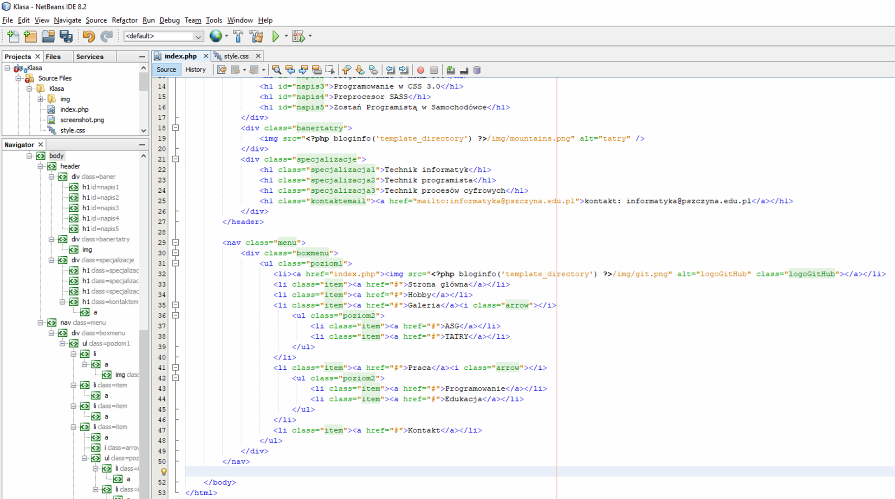

Index.php
1. Przechodzę do index.php i tworzę "header" według tego co pokazuje poniżej obrazek
2. Na tym etapie należy pobrać materiały przygotowane wcześniej ze strony szkoły
pobieramy załącznik, rozpakowujemy go i cały katalog img kopiujemy do projektu katalog
3. Podaje link do materiałów: POBIERZ MATERIAŁY
4. Po rozpakowaniu materiałów wycięciu i wklejeniu folderu "img" do naszego projektu "Klasa" mamy taki układ folderów
5. Widok struktury katalogów projektu "Klasa" w NetBeans
6. Dodanie kolejnego kodu do pliku index.php pod znacznikiem "/header". Tworzymy menu dla naszego projektu: znacznik "nav" menu
Proszę zwrócić uwagę na listy "ul li" oraz na definicję "class css" takich jak: menu, boxmenu, poziom1, poziom2, item - będziemy je później "ostylowywać" w pliku style.css oraz animacje.css

7. Przejdziemy teraz do dalszego kodowania i dodamy sobie "znaczik div class=wrapperstrona" w którym będzie znajdywać się dwa div'y lewa część strony i prawa część strony: lewa czyli o div class='container' (prezentować będzie artykuły ) a prawy div class='sidebar' (prezentować będzie loga oraz formularz kontaktowy)
8. Tworzę teraz kod dla artykułów w znaczniku div class='container' i kopiuje x 3 kod aby mieć 3 artykuły na stronie to co zakreściłem
dodatkowy div class='clear' posłuży nam do wyczyszenia float:left i float: right naszych artykułów
Prośba aby tekst zastępczy "Lorem" dodać kilka razy do artykułu np 4x...
9. po skopiowaniu i dodaniu kodu dla div class='sidebar' w którym mamy slajder zdjęć, ikony oraz formularz, wyglądać będzie tak
10. Na koniec kodowania w index.php dodajemy stopkę "footer" jak pokazano na obrazku